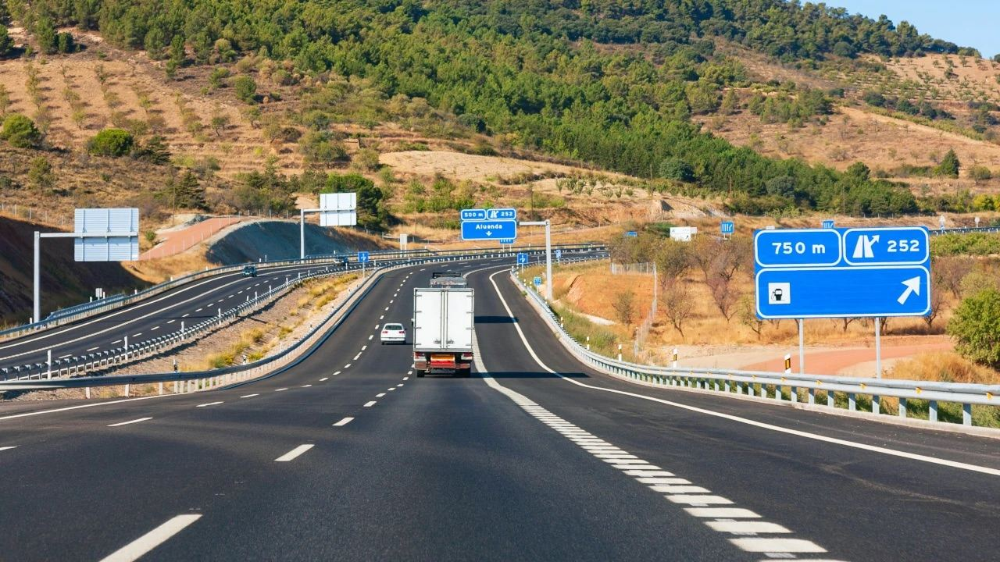
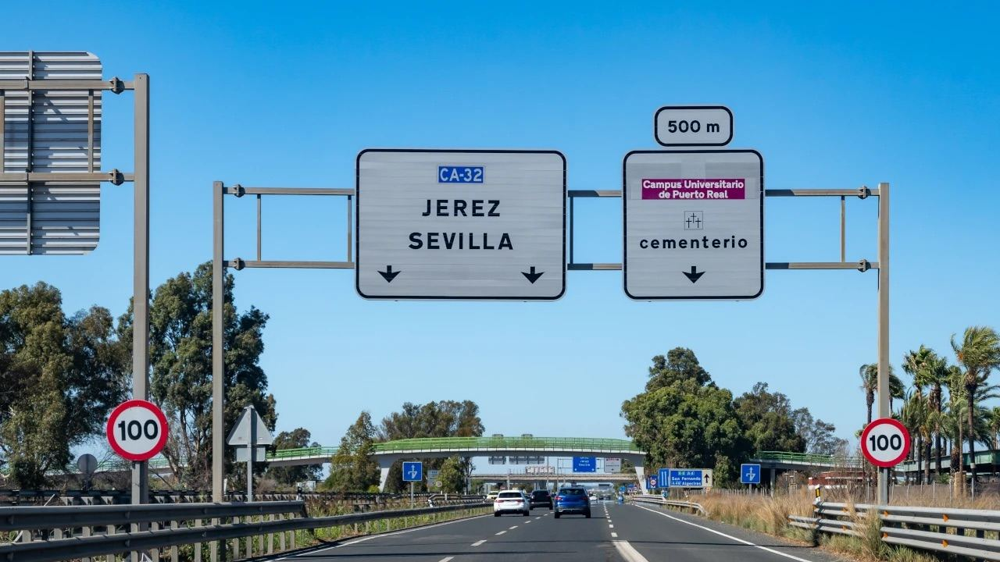
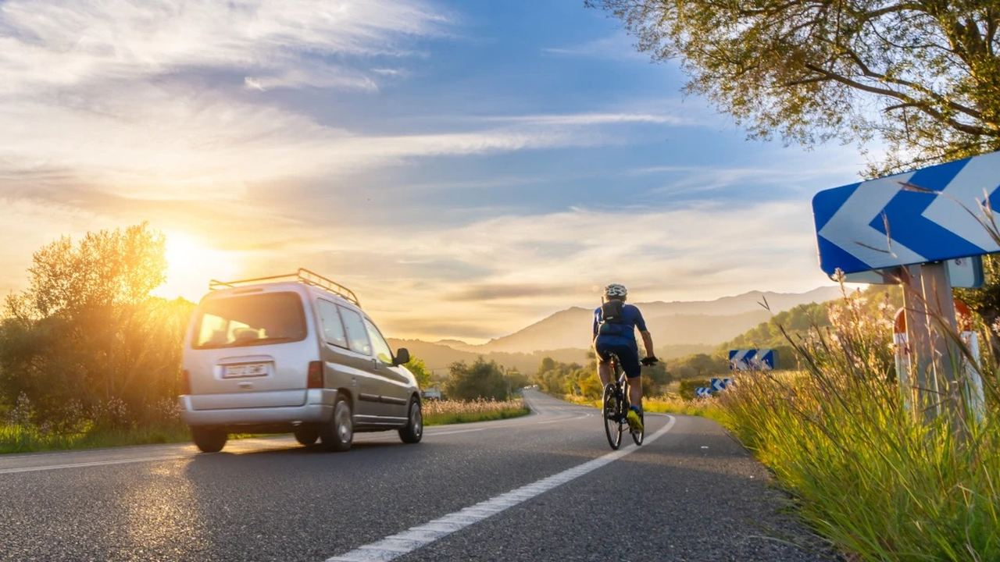

Vivir en España · Viajes
España en coche – Autopistas, carreteras y consejos
 Por Anita Orłowska · · actualizado · 3 min de lectura
Por Anita Orłowska · · actualizado · 3 min de lectura

En resumen: La mayoría de las autopistas españolas ya son gratuitas, pero algunos tramos siguen siendo de pago, como la AP-7 Alicante–Cartagena, la Cartagena–Vera (gratis de 0 a 6 h) y la de la Costa del Sol. Desde Madrid hay unas 4 horas hasta Alicante y unas 5 hasta Málaga. Los límites son 120 km/h en autopista, 90 en carretera y 50 o 30 en ciudad, y desde 2026 los coches españoles deben llevar la baliza V-16 conectada.
Ir a la costa en coche da libertad: maletero lleno, mascota incluida y movilidad al llegar. Esta guía repasa las principales rutas hacia la Costa Blanca y la Costa del Sol, los peajes que quedan en 2026 y las normas que conviene tener presentes, también si viene de otro país con su propio coche.
Rutas hacia la costa
- Madrid–Alicante: unos 420 km por la A-3 y la A-31, alrededor de 4 horas.
- Madrid–Málaga: unos 530 km por la A-4 y la A-44 o A-45, unas 5 horas.
- Barcelona–Alicante: unos 520 km por la AP-7, ya gratuita, unas 5 horas.
- Alicante–Málaga: unos 480 km por la A-7 y la A-92, unas 4 horas y media.
Si viene de fuera de España con su coche, la entrada habitual es por La Jonquera (Francia) o en ferri a Santander o Bilbao desde el Reino Unido o Irlanda.
Las principales carreteras

España tiene una de las mayores redes de autovías de Europa. Las autovías (A-) son gratuitas; las autopistas (AP-) nacieron como vías de peaje, pero muchas concesiones han terminado. Para la costa importan:
- A-7 / AP-7, corredor mediterráneo: de la frontera francesa por Valencia, Alicante, Murcia y Málaga.
- A-31 y A-3: de Madrid a Alicante y Valencia.
- A-4, A-44 y A-45: de Madrid a Málaga por Córdoba o Granada.
- N-332 y N-340: las antiguas carreteras de la costa, más lentas pero con buenas vistas.
¿Qué autopistas siguen siendo de peaje?
Entre 2018 y 2021 se liberaron la AP-7 de la frontera francesa a Alicante, la AP-1, la AP-2 y la AP-4 Sevilla–Cádiz. En 2026 los peajes principales en nuestras zonas son:
- AP-7 Alicante–Cartagena (alternativa gratuita: la A-7 por el interior).
- AP-7 Cartagena–Vera, gratis de 0:00 a 6:00.
- AP-7 Málaga–Guadiaro en la Costa del Sol (en paralelo va la A-7, gratuita y con más tráfico).
Se paga en cabina con tarjeta o en efectivo, o con telepeaje (Via-T). En enero de 2026 las tarifas subieron hasta un 4,7 % aproximadamente.
Normas de tráfico que conviene recordar

- Velocidad: 120 km/h en autopistas y autovías, 90 km/h en carreteras convencionales, 50 km/h en ciudad y 30 km/h en calles de un carril por sentido.
- Alcohol: 0,5 g/l en sangre (0,25 mg/l en aire), 0,3 para noveles y profesionales.
- Equipamiento: chaleco reflectante a mano y, desde el 1 de enero de 2026, la baliza V-16 conectada en los coches matriculados en España, que sustituye a los triángulos. Los vehículos extranjeros pueden seguir usando triángulos.
- Móvil: prohibido sujetarlo al volante, también parado en un semáforo.
- Ciclistas: al adelantar, al menos 1,5 m de distancia; se puede pisar la línea continua si es seguro.
- Multas: las cuantías están en nuestra guía de multas de tráfico.
Zonas de bajas emisiones
Las ciudades de más de 50.000 habitantes deben tener zona de bajas emisiones (ZBE). Madrid, Barcelona, Valencia o Málaga ya restringen la entrada de coches antiguos sin etiqueta de la DGT, y las normas para vehículos extranjeros cambian de una ciudad a otra. Consulte la web del ayuntamiento antes de entrar en el centro.
Si se instala con un coche extranjero
Un residente solo puede circular un tiempo limitado con matrícula extranjera; después debe matricular el coche en España, con ITV y el impuesto de matriculación. Los permisos de la UE siguen siendo válidos, y los de otros países pueden canjearse o no según los convenios. Lo explicamos en mudarse a España paso a paso.
Preguntas frecuentes
¿Son de pago las autopistas en España?
La mayoría ya son gratuitas. Siguen siendo de peaje tramos como la AP-7 Alicante–Cartagena, la Cartagena–Vera y la Málaga–Guadiaro en la Costa del Sol.
¿Cuánto se tarda de Madrid a la costa?
Unas 4 horas a Alicante y unas 5 a Málaga.
¿Cuál es el límite de velocidad en autopista?
120 km/h, salvo que la señalización indique menos. En carreteras convencionales 90 km/h y en ciudad 50 o 30 km/h.
¿Es obligatoria la baliza V-16?
Sí, desde el 1 de enero de 2026 para los vehículos matriculados en España. Debe ser una baliza conectada y homologada.
Disfrute del viaje
Llegar en coche es una buena forma de empezar una nueva etapa en la costa. Cuando esté aquí, le enseñaremos viviendas en la Costa Blanca y la Costa del Sol, muchas con plaza de garaje. Contacte con nosotros para organizar las visitas.
Fuentes: DGT – Spanish traffic authority · Ministerio de Transportes – roads and motorways · Brittany Ferries – UK to Spain routes